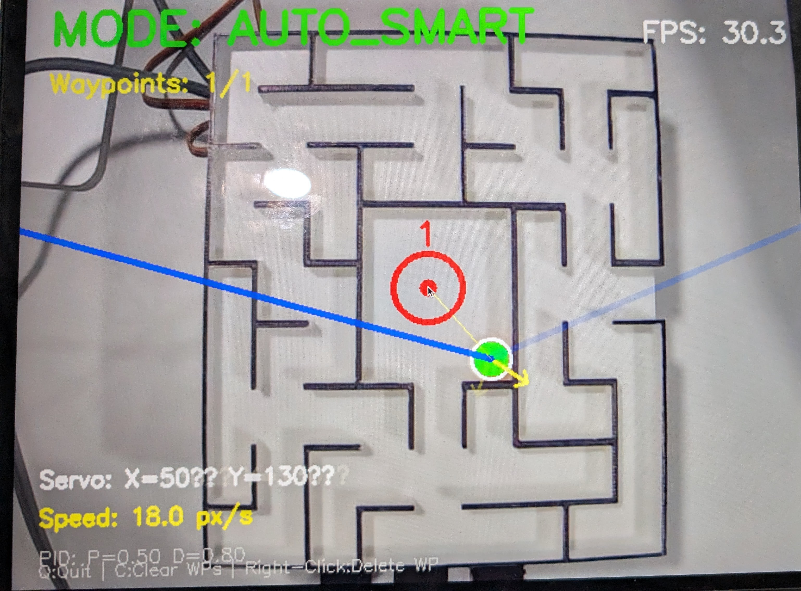

Tilting Maze Platform
Autonomous maze solving through computer vision, adaptive PID control, and machine learning path memory.



To build a fully autonomous system that bridges real-time computer vision, closed-loop control theory, and machine learning — all on physical hardware.
An ESP32 drives two high-torque servos on a 3D printed dual-axis platform, commanded by a Python computer vision pipeline over serial communication.
Adaptive PID controller, HSV-based orange ball tracking, Artificial Potential Field navigation, and an on-disk trajectory learning system with four operating modes.
How It Works
The platform tilts on two axes via servos driven by an ESP32, while a Python computer vision pipeline running on a connected computer handles all the intelligence. Each frame, the webcam feed is processed using HSV color segmentation to isolate the orange ball, with morphological filtering to clean up noise and a median filter across recent positions to smooth tracking. Wall detection uses inverse brightness thresholding — any dark pixel below a set threshold is treated as a wall boundary. Navigation is built on the Artificial Potential Field method: waypoints generate an attractive force toward the target, and nearby wall pixels generate repulsive forces that scale quadratically with proximity, causing the ball to curve naturally around obstacles rather than drive straight into them.
Control output flows through an Adaptive PID controller, where the proportional, integral, and derivative terms handle current error, accumulated drift, and oscillation damping respectively. The system auto-tunes its own gains every 60 frames based on actual performance — boosting aggression when sluggish, increasing damping when oscillating. A physics predictor runs in parallel, estimating ball velocity via exponential moving average and feeding a predicted future position into the error signal to compensate for the physical inertia of the ball. All of this is visualized live in a debug overlay showing force vectors, servo angles, speed, and PID state in real time.
Operating Modes
The joystick button cycles through four modes via click count — one click through four clicks — with the ESP32 broadcasting the active state over serial so the Python pipeline stays in sync.
Both servos are held at 90° and all serial commands from the computer are ignored. The platform sits completely level. This is the safe idle state used when setting up waypoints, repositioning the ball, or pausing between runs. Because the ESP32 handles this entirely in firmware, the platform stays locked even if the Python script loses connection.
The joystick directly maps to servo angles in real time — no computer involvement at all. Analog joystick readings from 0–4095 are mapped linearly to the 0°–180° servo range entirely on the ESP32. This mode is useful for manually navigating the maze, testing the physical range of motion of the platform, and verifying that both axes respond correctly before switching to autonomous modes. It is also the baseline for comparing how much the automated modes actually improve navigation.
The Python pipeline takes full control. Using the detected ball position, it computes an attraction force directly toward the current waypoint and runs it through the Adaptive PID and physics predictor to generate a servo command each frame. There is no wall avoidance in this mode — the system pulls straight toward each target regardless of what is in between. This makes it faster and more decisive in open sections of the maze, and is useful as a diagnostic baseline to see how the ball responds to the control system without the repulsion layer adding complexity. When the ball comes within the waypoint threshold radius, it automatically advances to the next waypoint and resets the PID state.
Everything in Auto Waypoint, plus two additional layers. First, wall repulsion: every frame, the system scans a region around the ball for wall pixels within the safety radius, computes a repulsive force vector away from each one, and adds it to the attraction force before passing the combined result to the PID. This causes the ball to naturally curve away from walls and navigate around corners rather than driving straight into them. Second, machine learning path memory: every time the ball successfully reaches a waypoint, the trajectory it took is recorded and saved to disk. On subsequent runs through the same waypoint pair, the system retrieves the shortest previously successful path and uses it as a series of intermediate guided targets rather than pointing straight at the final waypoint. The result is that the system genuinely improves each run — the first pass through a route may be slow and exploratory, but subsequent passes follow the learned highway and converge significantly faster.